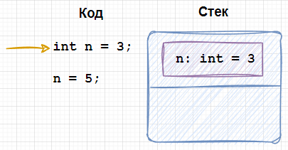
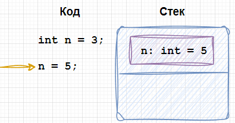
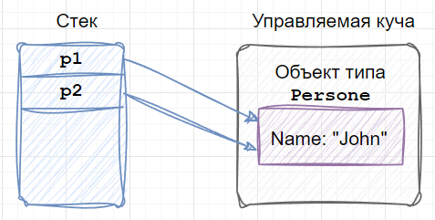
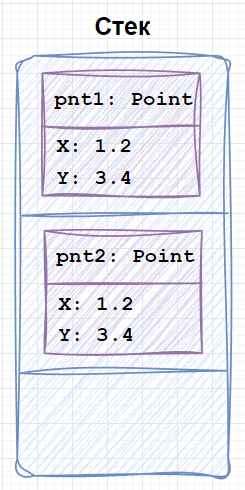
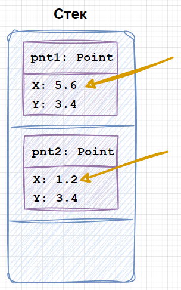

| Тема 6. Типы-значения (value type) в C#. | ||
| Назад | ||
Тип-значение (value type) в C#В рамках этого урока мы познакомимся поближе с типами-значениями. О типах значениях важно помнить следующее:
К типам-значениям относятся:
В рамках урока подробно остановимся на примитивных типах-значениях (про другие типы более детально расскажем позже). К примитивным типам-значениям относятся:
Создание переменной типа-значения
Рассмотрим, что происходит при создании переменной
типа-значения, на примере переменной типа int n = 3;
При выполнении этой строки в стеке выделяется память под
переменную  При модификации значения переменной, в памяти (в соответствующей ячейке) изменится содержимое.  При завершении работы блока кода (метода), память, выделенная под локальные переменные, очищается. Присваивание объектов типов-значенийВ предыдущем уроке, посвященном ссылочным типам, мы выяснили, что при присваивании значения ссылочного типа, происходит копирование ссылки на объект, который располагается в памяти (куче), при этом сам объект остается тем же. Person p1 = new Person() { Name = "John" };
// Person - это класс
Person p2 = p1;
 При присваивании типов-значений происходит создание нового экземпляра типа и копирование значений свойств (полей) из исходного значения в новое. Все это будет храниться в стеке.
Создадим объект тип var pnt1 = new Point() { X = 1.2, Y = 3.4 }; // Point - это структура
var pnt2 = pnt1;
Console.WriteLine($"{pnt1.X}, {pnt1.Y}"); // 1.2, 3.4
Console.WriteLine($"{pnt2.X}, {pnt2.Y}"); // 1.2, 3.4

Изменим значение поля pnt1.X = 5.6;
Console.WriteLine($"{pnt1.X}, {pnt1.Y}"); // 5.6, 3.4
Console.WriteLine($"{pnt2.X}, {pnt2.Y}"); // 1.2, 3.4
При этом значение полей у  Сравнение на равенство объектов типов-значений
При сравнении объектов ссылочного типа между собой через метод
Сравнение экземпляров типов-значений в случае если метод
Создадим набор переменных типа var a = new Point() { X = 1.2, Y = 3.4 };
var b = new Point() { X = 1.2, Y = 3.4 };
var c = new Point() { X = 5.6, Y = 3.4 };
Console.WriteLine(a.Equals(b)); // True
Console.WriteLine(a.Equals(c)); // False
|
||
| Конспект подготовлен Бакулиным А. М. 2012 год. | ||